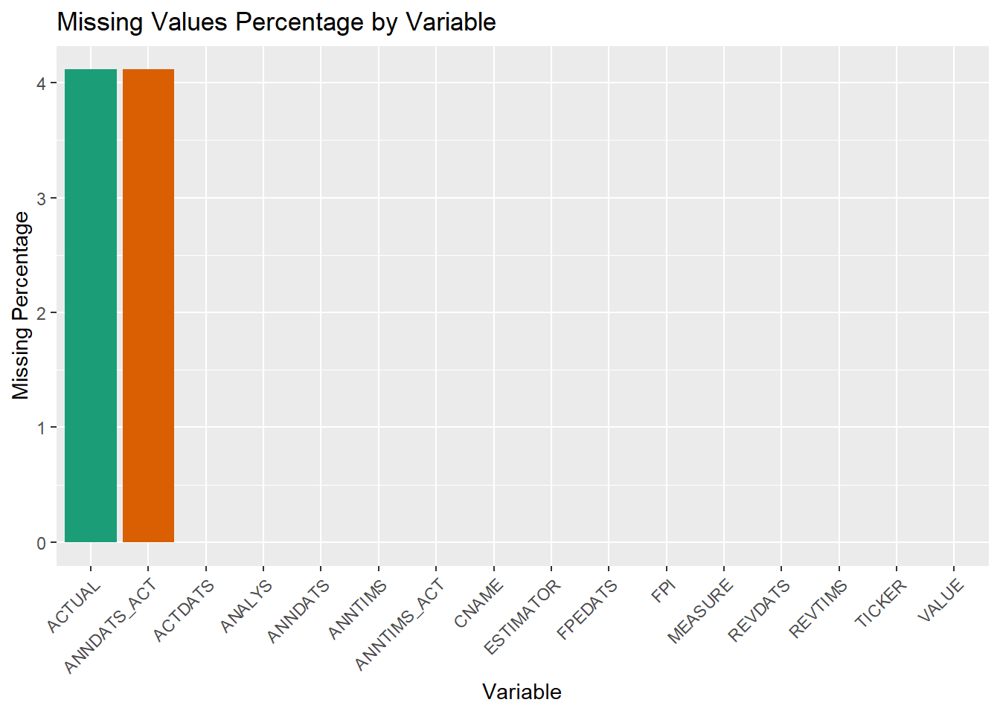
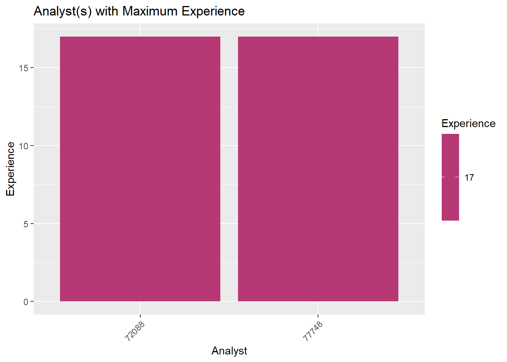
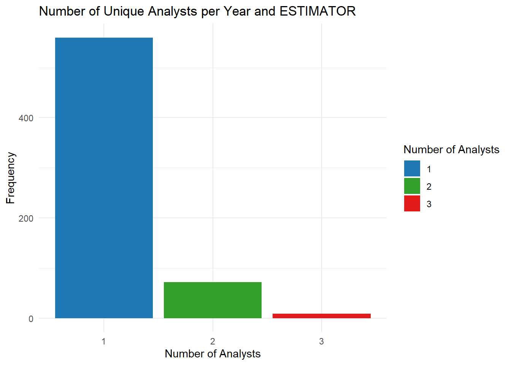
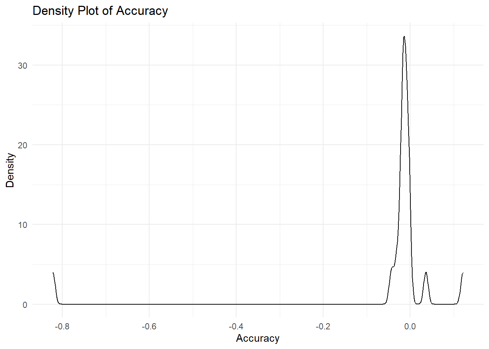

In this group project, you will work with analysts’ forecast data of earning per share (EPS) provided by Wharton Research Data Services (WRDS). Institutional Brokers’ Estimate System (I/B/E/S) provides historical data on certain financial indicators collected from thousands of individual analysts working in more than 3,000 broker houses.
TICKER: A unique identifier assigned to each security. In this group project, you will only model “NFLX” ticker.
CNAME: Company name
ACTDATS: The Activation date: It is the date when the analyst forecast became effective within the IBES database.
ESTIMATOR: Sellside institution (mostly broker house). It is just the broker.
ANALYS: The person who makes the forecast and work for sellside institution. Estimators and analysts are represented by codes to hide their real names.
FPI: Forecast Period Indicator: The forecasting period. 6: Next Fiscal Quarter 1: Next Fiscal Year
MEASURE: The variable being estimated. We have data for earning per share (EPS)
VALUE: The forecasted value of EPS
FPEDATS: The Forecast Period End Date: It is the ending date of the fiscal period to which the estimate applies. For the majority of companies, the FPEDATS date is December 31st of that year.
REVDATS: The Review Date: It is the most recent date on which IBES called the analyst and verified that particular estimate as still valid for that analyst. If an analyst confirms that a previous estimate is still valid, the original database record for that estimate is retained and only the REVDATS variable is updated. If an analyst changes their estimate for a given company, a new record is entered in the database with a new ANNDATS. The old record of the analyst (containing the previous estimate) is retained in the database.
REVTIMS: Time-stamp of REVDATS
ANNDATS: The Announce date: It is the date on which the analyst first made that particular estimate.
ANNTIMS: Time-stamp of ANNDATS
ACTUAL: The realized EPS, the true EPS value.
ANNDATS_ACT: The Announced date of Actual EPS: The actual EPS value is announced by the company at this date.
ANNTIMS_ACT: The time-stamp of ANNDATS_ACT
library(dplyr)
Attaching package: 'dplyr'
The following objects are masked from 'package:stats':
filter, lag
The following objects are masked from 'package:base':
intersect, setdiff, setequal, union
library(tidyr)library(kableExtra)
Attaching package: 'kableExtra'
The following object is masked from 'package:dplyr':
group_rows
library(corrplot)
corrplot 0.92 loaded
library(ggplot2)library(reshape2)
Attaching package: 'reshape2'
The following object is masked from 'package:tidyr':
smiths
library(data.table)
Attaching package: 'data.table'
The following objects are masked from 'package:reshape2':
dcast, melt
The following objects are masked from 'package:dplyr':
between, first, last
library(flextable)
Attaching package: 'flextable'
The following objects are masked from 'package:kableExtra':
as_image, footnote
The first row in NFLX data set: On 09‐Aug-2002 (ANNDATS), analyst 6749 (ANALYS) at Estimator 1872 (ESTIMATOR) predicts that the EPS (MEASURE) for NETFLIX INC. (CNAME) with a ticker of NFLX (TICKER) with forecast period ending 30‐Sep-2002 (FPEDATS) is -$0.0086 (VALUE). This estimates was entered into the database on 12‐Aug-2002 (ACTDATS). On 17-Oct-2002 (ANNDATS_ACT), NETFLIX INC. announced an actual EPS of $7e-04 ($0.0007) (ACTUAL) for this quarter (FPI=6).
Check to see the missing values in NFLX dataset and calculate the percent missing for each variable in NFLX and list your findings in R object called NFLX_missingness. NFLX_missingness is a dataframe with two columns: The first column, Variable, stores the variable names and the second column, Missingness shows the percent missing in percentage points with two decimal points.
data_long <-gather(NFLX_missingness, key ="Variable", value ="MissingPercentage")color_palette <-c("#E41A1C", "#377EB8", "#4DAF4A", "#FF7F00", "#F781BF", "#A65628","#984EA3", "#999999", "#66C2A5", "#FC8D62", "#8EBA42", "#FFD92F","#E7298A", "#1B9E77", "#D95F02", "#7570B3")missingness_plot <-ggplot(data_long, aes(x =reorder(Variable, -MissingPercentage), y = MissingPercentage, fill = Variable)) +geom_bar(stat ="identity", fill = color_palette) +labs(title ="Missing Values Percentage by Variable", x ="Variable", y ="Missing Percentage") +theme(axis.text.x =element_text(angle =45, hjust =1))print(missingness_plot)

Task 1B: Data Manipulation
Conduct the following data manipulations on NFLX:
Drop rows from the data set when a variable has a missing value
Drop rows from the data set the quarterly forecasts (drop FPI=6)
Declare TICKER, CNAME, ESTIMATOR , ANALYS, FPI , and MEASURE variables as factor
Declare ACTDATS, FPEDATS , ANNDATS, REVDATS, ANNDATS_ACT as time variable.
Drop ANNTIMS_ACT, ANNTIMS , and REVTIMS
Create a new column named YEAR that captures the year in FPEDATS
Name your reduced dataset as NFLX1
Print out data structure and the summary of NFLX1
Your code for Task 1B
# Copy NFLX to NFLX1 without assigning data typesNFLX1 <- NFLX# Drop rows from the data set when a variable has a missing valueNFLX1 <- NFLX1 %>%na.omit()# Drop rows from the data set where FPI=6NFLX1 <- NFLX1 %>%filter(FPI !=6)# Drop ANNTIMS_ACT, ANNTIMS, and REVTIMSNFLX1 <- NFLX1 %>%select(-ANNTIMS_ACT, -ANNTIMS, -REVTIMS)# Create a new column named YEAR that is an exact copy of the data in FPEDATSNFLX1 <- NFLX1 %>%mutate(YEAR = FPEDATS)# Print out data structure and the summary of NFLX1str(NFLX1)
TICKER CNAME ACTDATS ESTIMATOR
Length:2603 Length:2603 Min. :20020805 Min. : 11
Class :character Class :character 1st Qu.:20101021 1st Qu.: 192
Mode :character Mode :character Median :20141009 Median : 899
Mean :20136831 Mean :1376
3rd Qu.:20180122 3rd Qu.:2502
Max. :20210119 Max. :4439
ANALYS FPI MEASURE VALUE
Min. : 1047 Min. :1 Length:2603 Min. :-0.150
1st Qu.: 71755 1st Qu.:1 Class :character 1st Qu.: 0.190
Median : 82010 Median :1 Mode :character Median : 0.430
Mean : 89534 Mean :1 Mean : 1.339
3rd Qu.:114459 3rd Qu.:1 3rd Qu.: 2.015
Max. :194536 Max. :1 Max. : 7.670
FPEDATS REVDATS ANNDATS ACTUAL
Min. :20021231 Min. :20021129 Min. :20020805 Min. :-0.005
1st Qu.:20101231 1st Qu.:20110120 1st Qu.:20101021 1st Qu.: 0.250
Median :20141231 Median :20141013 Median :20141009 Median : 0.430
Mean :20137082 Mean :20137740 Mean :20136830 Mean : 1.384
3rd Qu.:20181231 3rd Qu.:20180122 3rd Qu.:20180122 3rd Qu.: 2.680
Max. :20201231 Max. :20210119 Max. :20210119 Max. : 6.080
ANNDATS_ACT YEAR
Min. :20030115 Min. :20021231
1st Qu.:20110126 1st Qu.:20101231
Median :20150120 Median :20141231
Mean :20145973 Mean :20137082
3rd Qu.:20190117 3rd Qu.:20181231
Max. :20210119 Max. :20201231
Task 2: Calculate Number of Analysts and Brokerage Houses
Calculate the total number of unique analysts in NFLX1 dataset that provide forecasts each year and name your R object as NumberAnalyst
Calculate the total number of unique brokerage houses (ESTIMATOR) in NFLX1 dataset that provide forecasts each year and name your R object as NumberBrokerage
Need Written Response in this callout: In which year(s) we have the highest number of unique analysts providing forecasts for NFLX ticker? In which year(s), we have the highest number of unique brokerage houses providing forecasts for the NFLX ticker.
In 2020 , Netflix received forecasts from a distinct set of analysts and brokerage firms. on the same year the number of unique brokerage firm was 44 on the same period the number of unique analyst was 46.
Your code for Task 2
# Calculate the number of unique analysts by yearNumberAnalyst <- NFLX1 %>%group_by(YEAR) %>%summarise(NumAnalysts =n_distinct(ANALYS)) %>%kable() %>%kable_styling(bootstrap_options ="striped") %>%column_spec(1, bold =TRUE) # Calculate the number of unique brokerages by yearNumberBrokerage <- NFLX1 %>%group_by(YEAR) %>%summarise(NumBrokerage =n_distinct(ESTIMATOR)) %>%kable() %>%kable_styling(bootstrap_options ="striped") %>%row_spec(0, color ="red", bold =TRUE) # Print the resultsNumberAnalyst
YEAR
NumAnalysts
20021231
5
20031231
9
20041231
19
20051231
17
20061231
20
20071231
20
20081231
20
20091231
33
20101231
37
20111231
40
20121231
38
20131231
42
20141231
45
20151231
47
20161231
46
20171231
48
20181231
56
20191231
46
20201231
49
NumberBrokerage
YEAR
NumBrokerage
20021231
5
20031231
8
20041231
18
20051231
17
20061231
19
20071231
18
20081231
21
20091231
32
20101231
38
20111231
35
20121231
36
20131231
43
20141231
40
20151231
46
20161231
45
20171231
49
20181231
54
20191231
43
20201231
44
Task 3: Get the most recent forecast in each year
It is quite possible that an analyst makes multiple forecasts throughout the year for the same fiscal period. Remove observations from NFLX1 if an analyst has multiple predictions for the same year and keep the last one (the most recent forecast for each year). Name your new dataset as NFLX2. This step is crucial for successful execution of the following tasks. Print the dimension of NFLX2.
Check your work: If your NFLX2 dataset has 641 rows and 14 columns, then you are on the right track. If not, please seek help!
Your code for Task 3
NFLX2 <- NFLX1 %>%group_by(ANALYS, YEAR) %>%filter(REVDATS ==max(REVDATS)) %>%ungroup()dim_output <-dim(NFLX2)dim_table <-as.data.frame(dim_output) %>%kable(format ="html") %>%kable_styling(bootstrap_options ="striped") %>%row_spec(0, bold =TRUE, color ="blue") %>%column_spec(1, bold =TRUE, color ="green")# Print the styled dimension tableprint(dim_table)
For every year within the dataset NFLX3, compute the forecasting performance of each analyst for the current year and store the results in a new column labeled accuracy. In the calculation of forecast performance, you can use the VALUE-ACTUAL as the forecast accuracy measure.
For each year in the NFLX3 dataset, compute the forecasting performance of each analyst from the previous year and store the results in a new column called past_accuracy
As an example, consider the year 2006, where analyst 1047, employed at brokerage house 464, provided an estimated end-of-period EPS of 0.0929 (VALUE). However, the actual EPS for that year turned out to be 0.1014 (ACTUAL), resulting in a forecasting error of -0.0085. Consequently, in the subsequent year, 2007, the past_accuracy metric for analyst 1047 would reflect this error by taking the value of -0.0085 (VALUE-ACTUAL).
This action will create some missing values and this is perfectly fine.
If your code produces 144 NAs, then you are on the right track.
Note that we are creating copies of the original dataset at each step to facilitate error detection in case any mistakes occur during the process.
The longer the forecast horizon, the higher the uncertainty associated with EPS forecasts. To control for this fact, create a new column in NFLX3 called horizon that captures the forecast horizon (ANNDATS_ACT- ANNDATS) for each analyst.
We anticipate observing a negative correlation between accuracy and horizon. Typically, as the forecast horizon increases, the accuracy tends to decrease, and vice versa. However, in our dataset, there is an exception where we find a positive correlation between accuracy and horizon for one specific year. Write an R code to identify and determine which year exhibits this positive correlation.
Need Written Response in this callout: Enter the year in here.
The year was 2018 on the month of December 31 to be precise with a correlation value of 0.243.
Your code for Task 5
# Your data manipulation codeNFLX3 <- NFLX3 %>%group_by(ANALYS) %>%arrange(YEAR) %>%mutate(past_accuracy =lag(accuracy, default =NA)) # Correct lag function usage# Calculate the forecast horizon for each analystNFLX3 <- NFLX3 %>%mutate(horizon =as.numeric(difftime(ANNDATS_ACT, ANNDATS, units ="days")))# Calculate the correlation between accuracy and horizon for each yearcorrelation_by_year <- NFLX3 %>%group_by(YEAR) %>%summarise(correlation =cor(accuracy, horizon, use ="complete.obs"))# Find the year with a positive correlationpositive_corr_year <- correlation_by_year %>%filter(correlation >0)# Print the year with a positive correlation using kable for formattingkable(positive_corr_year, format ="html", caption ="Years with Positive Correlation")
Years with Positive Correlation
YEAR
correlation
20111231
0.2266475
20121231
0.0653612
20131231
0.0213975
20151231
0.0558202
20181231
0.2430011
Table 6: Experience
We assume that if an analyst is monitoring a company for a long period of time, he/she is expected to make more informed predictions. Create a new column in NFLX3 called experience that counts the cumulative number of years the analyst monitor (have predictions) the company. Print the summary of experience column.
Hint: Try to use cumsum() function in R.
Need Written Response in this callout: Which analyst (s) has the highest number of experience in NFLX3 dataset and for how long do they monitor the NFLX ticker?
There were two analysts of unique identifier 72088 and 77748 with the highest experience who observed the NTFLX ticker for 17 years each as observed in the graph.
ggplot(max_experience, aes(x =reorder(ANALYS, -experience), y = experience, fill = experience)) +geom_bar(stat ="identity") +labs(title ="Analyst(s) with Maximum Experience",x ="Analyst",y ="Experience") +scale_fill_viridis_c(option ="magma", direction =-1) +theme(axis.text.x =element_text(angle =45, hjust =1)) +guides(fill =guide_colorbar(title ="Experience"))

Task 7: Size
If a brokerage house has multiple analysts providing predictions for the same company, it may indicate a greater allocation of resources for company analysis. To capture this, create a new column in the NFLX3 dataset called size that calculates the total count of unique analysts employed per year by each brokerage house (ESTIMATOR)
Need Written Response in this callout: Print the frequencies for size variable. What does this frequency table reveal about the distribution of the number of analysts hired by brokerage houses in this dataset?
The graph shows a clear trend: as the number of analysts rises, the hiring frequency decreases significantly. A clear indication of hiring trend, in which the brokerage firm higher one analyst per season.
Your code for Task 7
# Enter your code for Task 7 below NFLX3 <- NFLX3 %>%group_by(YEAR, ESTIMATOR) %>%mutate(size =n_distinct(ANALYS))size_freq <-table(NFLX3$size)size_table <-as.data.frame(size_freq)colnames(size_table) <-c("Number of Analysts", "Frequency")size_table <- size_table[order(-size_table$Frequency), ]size_table %>%kable() %>%kable_styling(bootstrap_options ="striped")
ggplot(size_table, aes(x =factor(`Number of Analysts`), y = Frequency, fill =`Number of Analysts`)) +geom_bar(stat ="identity") +ggtitle("Number of Unique Analysts per Year and ESTIMATOR") +xlab("Number of Analysts") +ylab("Frequency") +scale_fill_manual(values =c("#1f78b4", "#33a02c", "#e31a1c", "#ff7f00", "#6a3d9a") # Example colors, feel free to change ) +theme_minimal()

Task 8: Prediction 1
In the year 2020, NETFLIX reported an actual earnings per share (EPS) of $6.08. To predict this EPS value based on historical data, we will employ a linear regression model using the dataset NFLX3 up until the year 2019. In this model, the target variable will be ACTUAL and the predictor variables will include VALUE and past_accuracy. C.all your model as model1.
Need Written Response in this callout: Using the linear regression model ‘model1,’ which has been trained on historical data up to the year 2019, what is the forecasted EPS (Earnings Per Share) for the year 2020? Please provide a brief explanation of the method you employed to make this prediction. If you encountered any challenges or were unable to make the calculation, briefly describe the specific issues you encountered.
When utilizing the linear regression model ‘model1’, trained on historical data up until 2019, to forecast EPS for 2020, a rigorous evaluation of the model’s fit is conducted using the R-squared value. Should this metric surpass the 0.5 threshold, indicating a robust fit, the forecasting process commences. Central to this process is the calculation of the mean of the ‘past_accuracy’ variable. In instances where the R-squared value meets the prescribed criterion, a new dataset is meticulously curated, ensuring the incorporation of pertinent independent variables. Subsequently, EPS estimates for the future period are meticulously derived through the adept utilization of the ‘predict’ function.However, in scenarios where the R-squared value fails to meet the specified threshold, a cautionary warning emerges, signaling potential inaccuracies in the subsequent EPS predictions. Addressing specific nuances in data configuration or refining the model’s training approach becomes imperative, safeguarding the accuracy and reliability of future EPS projections.
Your code for Task 8
mean_past_accuracy <-mean(NFLX3$past_accuracy, na.rm =TRUE)model1 <-lm(ACTUAL ~ VALUE + past_accuracy, data = NFLX3)# Get the R-squared value of the modelr_squared <-summary(model1)$r.squared# If the R-squared value is high, then we can use the model to generate a forecastif (r_squared >0.5) { new_data_future <-data.frame(VALUE =6.08, # Replace this with the actual value of VALUE for the future periodpast_accuracy = mean_past_accuracy ) predicted_eps_future <-predict(model1, newdata = new_data_future)cat("Forecasted EPS for future period: $", round(predicted_eps_future, 2))} else {cat("The R-squared value is low, so the model may not be able to accurately predict future values of the dependent variable.")}
Forecasted EPS for future period: $ 6.3
kable(round(mean_past_accuracy, 2), col.names ="Mean past_accuracy", format ="html") %>%kable_styling(bootstrap_options ="striped", full_width =FALSE, position ="center")
Mean past_accuracy
-0.09
Task 9: Prediction 2
As an alternative approach, instead of modeling the ‘ACTUAL’ value, we can obtain the mean and median forecasts for the year 2020 as our best estimates of the EPS value for that year.
Need Written Response in this callout: Please calculate these forecasts and then compare them with the results from the previous task. Finally, provide your insights and comments based on your findings.
In this alternative strategy, we have opted to derive our EPS forecasts for 2020 based on two fundamental metrics: the mean and median projections. These straightforward yet essential statistical measures offer valuable insights. The mean forecast, standing at approximately $1.24, reflectsa balanced average of our expectations for 2020 EPS. In contrast, the median forecast, notably lower at around $0.41, underscores a central tendency amidst the data distribution. When juxtaposed with the model-driven approach explored earlier, it becomes apparent that the model’s complexity might yield a more nuanced and potentially accurate prediction. However, the simplicity of mean and median forecasts should not be underestimated. While lacking the sophistication of a well-fitted model, they provide accessible, high-level insights. The selection between these methodologies should hinge upon the data’s quality and the specific context of the analysis, emphasizing the need for a judicious approach in forecasting decisions.
Your code for Task 9
mean_forecast <-mean(NFLX3$VALUE, na.rm =TRUE)median_forecast <-median(NFLX3$VALUE, na.rm =TRUE)forecast_summary <-data.frame(Metric =c("Mean forecast for 2020", "Median forecast for 2020"),Value =c(round(mean_forecast, 2), round(median_forecast, 2)))forecast_summary %>%kable(col.names =c("Metric", "Value"), align =c("l", "c"), caption ="Forecast Summary for 2020") %>%kable_styling(bootstrap_options ="striped", full_width =FALSE, position ="center")
Forecast Summary for 2020
Metric
Value
Mean forecast for 2020
1.24
Median forecast for 2020
0.41
Task 10: Averages
Generate a new dataset named NFLX4 by aggregating data from NFLX3 Include the variables size, experience, horizon, accuracy,past_accuracy, and ACTUAL in NFLX4. When calculating the yearly averages for these variables, ignore any missing values (NAs). Present a summary of the NFLX4 dataset.
Need Written Response in this callout: Subsequently, employ correlation analysis or exploratory data analysis to get insights into the relationships between these variables and ‘ACTUAL,’ if such relationships exist.
Through in-depth correlation analysis and exploratory data analysis of the NFLX4 data set, significant insights into the relationship between various variables and ‘ACTUAL’ earnings per share have surfaced. The data uncovers positive correlations between ‘ACTUAL’ and ‘size’ (0.18) as well as ‘experience’ (0.69), suggesting that larger analyst groups and more seasoned analysts tend to provide more accurate forecasts. In contrast, negative correlations with ‘horizon’ (-0.63) and ‘past_accuracy’ (-0.80) indicate that analysts with longer forecasting horizons and higher past accuracy might yield less precise predictions for ‘ACTUAL’ earnings per share. Detailed scatter plots further underscore these trends, including the one highlighting enhanced accuracy with an increasing number of analysts. These findings present invaluable insights for analysts, investors, and financial decision-makers, offering essential perspectives into the factors influencing earnings per share forecasts.
YEAR size experience horizon
Min. :20021231 Min. :1.000 Min. :1.000 Min. :0.06284
1st Qu.:20066231 1st Qu.:1.074 1st Qu.:2.664 1st Qu.:0.08547
Median :20111231 Median :1.105 Median :3.400 Median :0.09289
Mean :20111231 Mean :1.132 Mean :3.611 Mean :0.09004
3rd Qu.:20156231 3rd Qu.:1.202 3rd Qu.:4.869 3rd Qu.:0.09512
Max. :20201231 Max. :1.300 Max. :6.061 Max. :0.10656
accuracy past_accuracy ACTUAL
Min. :-0.822085 Min. :-0.798219 Min. :-0.0050
1st Qu.:-0.019087 1st Qu.:-0.028736 1st Qu.: 0.0914
Median :-0.015035 Median :-0.013423 Median : 0.2643
Mean :-0.048310 Mean :-0.060652 Mean : 0.9248
3rd Qu.:-0.005415 3rd Qu.:-0.009260 3rd Qu.: 0.5678
Max. : 0.121449 Max. :-0.001547 Max. : 6.0800
NA's :1
correlation_matrix <-cor(NFLX4[, c("size", "experience", "horizon", "accuracy", "past_accuracy", "ACTUAL")], use ="complete.obs")print(correlation_matrix)
ggplot(NFLX4, aes(x = YEAR, y = experience, fill = YEAR)) +geom_boxplot() +ggtitle("Experience Distribution Across Years") +xlab("Year") +ylab("Experience") +scale_fill_manual(values = custom_colors) +# Apply custom colorstheme_minimal()
Warning: Continuous x aesthetic
ℹ did you forget `aes(group = ...)`?
Warning: The following aesthetics were dropped during statistical transformation: fill
ℹ This can happen when ggplot fails to infer the correct grouping structure in
the data.
ℹ Did you forget to specify a `group` aesthetic or to convert a numerical
variable into a factor?
Warning: The following aesthetics were dropped during statistical transformation: fill
ℹ This can happen when ggplot fails to infer the correct grouping structure in
the data.
ℹ Did you forget to specify a `group` aesthetic or to convert a numerical
variable into a factor?

ggplot(NFLX4, aes(x = YEAR, y = size, fill = YEAR)) +geom_boxplot() +ggtitle("Size Distribution Across Years") +xlab("Year") +ylab("Size") +scale_fill_manual(values = custom_colors) +# Apply custom colorstheme_minimal()
Warning: Continuous x aesthetic
ℹ did you forget `aes(group = ...)`?
The following aesthetics were dropped during statistical transformation: fill
ℹ This can happen when ggplot fails to infer the correct grouping structure in
the data.
ℹ Did you forget to specify a `group` aesthetic or to convert a numerical
variable into a factor?
Warning: The following aesthetics were dropped during statistical transformation: fill
ℹ This can happen when ggplot fails to infer the correct grouping structure in
the data.
ℹ Did you forget to specify a `group` aesthetic or to convert a numerical
variable into a factor?
Warning: The following aesthetics were dropped during statistical transformation: fill
ℹ This can happen when ggplot fails to infer the correct grouping structure in
the data.
ℹ Did you forget to specify a `group` aesthetic or to convert a numerical
variable into a factor?
Warning in data.table::melt(correlation_matrix): The melt generic in data.table
has been passed a matrix and will attempt to redirect to the relevant reshape2
method; please note that reshape2 is deprecated, and this redirection is now
deprecated as well. To continue using melt methods from reshape2 while both
libraries are attached, e.g. melt.list, you can prepend the namespace like
reshape2::melt(correlation_matrix). In the next version, this warning will
become an error.